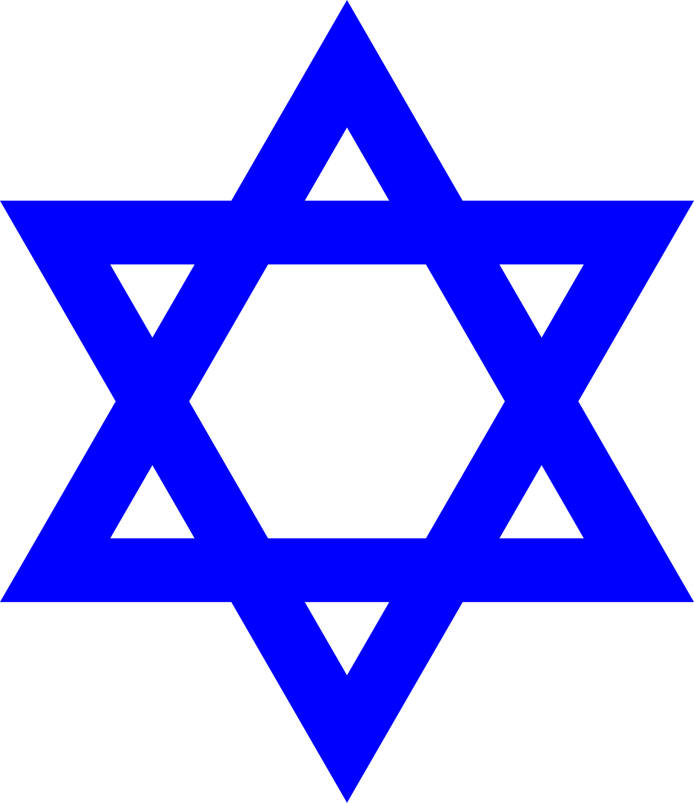
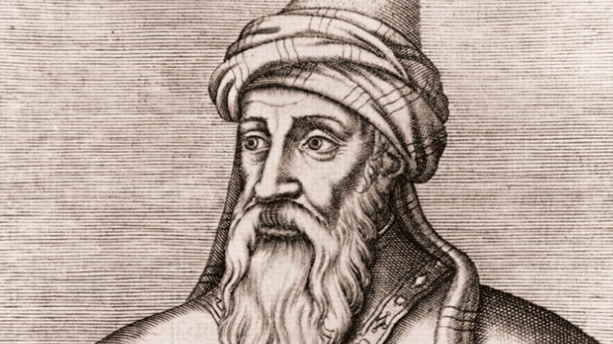
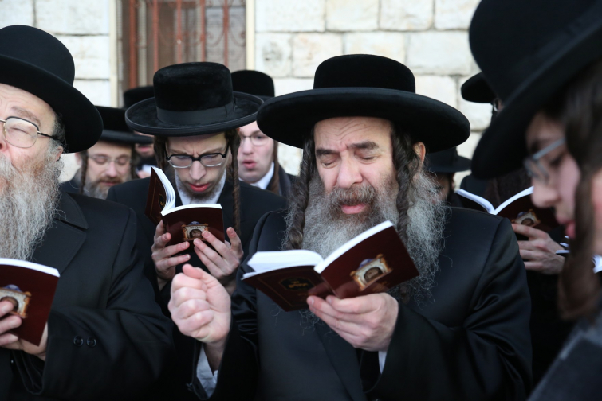
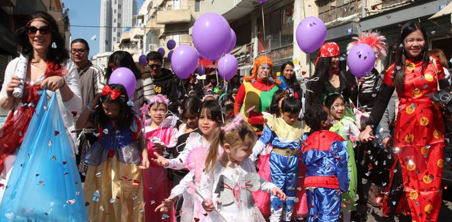
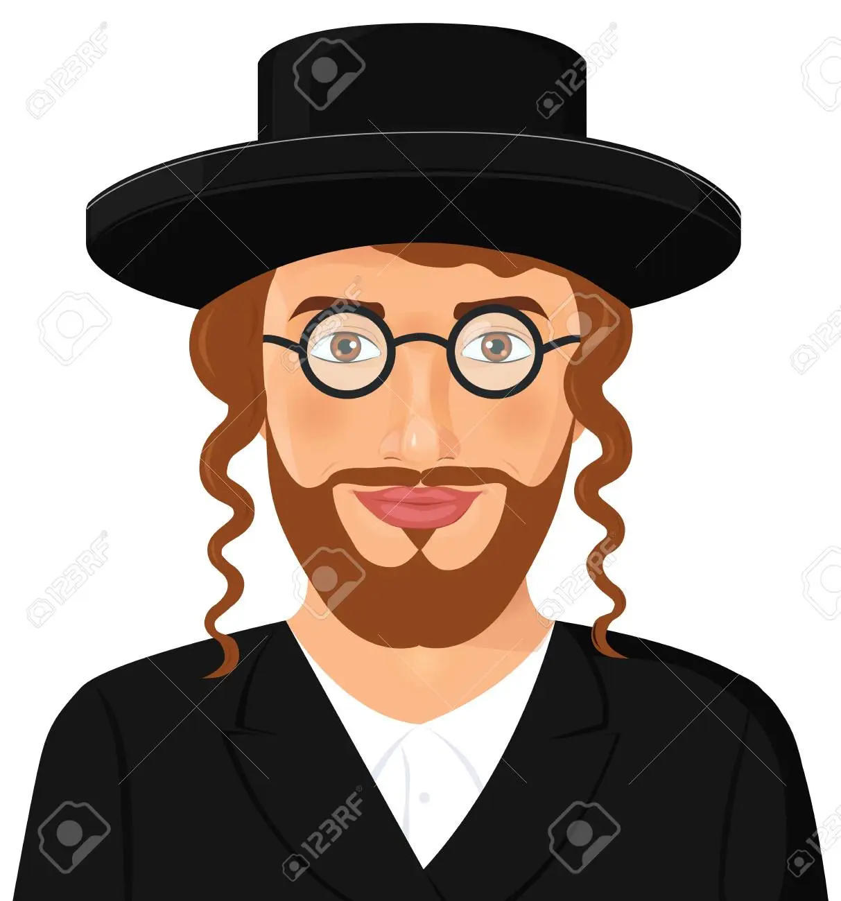

Het Jodendom

Waar geloven de joden in?
Het Joodse volk leefde volgens de Bijbelse overlevering gedurende ten
minste drieduizend jaar in de regio Palestina, waar het een monotheïstische
religie (het jodendom) ontwikkelde en meerdere malen zelfbeschikking genoot.
De Joden werden na een opstand door de Romeinen vrijwel geheel uit Palestina
verbannen. Daarna begon de diaspora, oftewel verspreiding. De Joden hebben sindsdien
een bewogen bestaan geleid waarin armoede, discriminatie, onderdrukking en uitroeiing,
maar ook culturele, economische en individuele bloei voorkwamen.
Door de jaren heen was de joodse religie, het jodendom, de voornaamste bindende factor
tussen de Joden die verspreid over de hele wereld wonen, maar het belijden van
deze religie of het volgen van de joodse tradities is geen vereiste om tot het
Joodse volk te behoren.
Sinds de opkomst van het nationalisme en de Verlichting
hebben ook Joden een transitie ondergaan waardoor velen zich minder als een volk en
meer als een etnische of etno-religieuze gemeenschap binnen andere volken zijn gaan
zien. Deelname aan alle aspecten van het maatschappelijk leven kon nu toenemen.
Hoeveel goden hebben de joden?
Zoals veel religies hebben de Joden maar één God. Maar hoeveel goden?
Gods naam is in de loop van de tijd in het jodendom op verschillende manieren opgevat.
In het traditionele jodendom is JahWah de god van Abraham, Isaac en Jacob.
De nationale god van de Israëlieten, die hun uit de slavernij in Egypte heeft verlost,
De wet van Mozes beschreven in de Hebreeuwse Bijbel werd afgekondigd op de berg Sinaï.
Volgens de rationalistische stromingen van het jodendom, vooral zoals belichaamd door Maimonides
De belangrijkste latere invloed op het traditionele joodse denken, het begrijpen van God
Het absolute, ondeelbare, onvergelijkbare wezen zijn, de ultieme oorzaak
alles wat bestaat.
Traditioneel is God zowel persoonlijk als transcendent, maar
Moderne interpretaties benadrukken dat God een kracht of een ideaal is.
Er zijn verschillende namen van God in het jodendom. in de Hebreeuwse bijbel
De meest voorkomende zijn Hebreeuwse tetragrammaton יהוה (JahWah) en Elohim.
De namen van God die in het traditionele jodendom worden gebruikt, zijn El Shaddai en Shechina.

Leven van de joden
Het jodendom is geen abstract geloof. In feite bestaat er binnen het jodendom een gezonde
scepsis over het verstrikt raken in theologische speculaties en dogmatische opvattingen.
God gaat immers verder dan alles wat we in woorden, definities en beelden kunnen vatten;
we kunnen alleen maar zeggen dat hij een dichter van liefde is.
Zelfs Gods naam is een onuitspreekbaar mysterie. Het jodendom is een religie die erg gericht is op het juiste doen.
En een geloof dat wil vieren door God voortdurend te prijzen als eeuwig en gezegend. Zelfs als je
God looft bij dagelijkse activiteiten - zoals opstaan, eten en werken - is bidden als een rode
draad die door de dag loopt. Het leven wordt zo een doorlopend ritueel.
Daarnaast zijn er de sabbat en joodse feestdagen, die een weerspiegeling zijn van belangrijke momenten in de
geschiedenis van God en zijn verbondsvolk.
Die notie van geloven als iets dat in voortdurende verbinding staat met ieder aspect van ons
leven, is bij veel christenen wat op de achtergrond geraakt. Wij beschouwen ons geloof vooral
als een ‘mindset’, een verzameling van opvattingen die op een kerkbezoek op zondagochtend na
en een sporadisch kruisje bij een maaltijd nauwelijks onderhoud behoeft.
In de ontmoeting met het levende Jodendom kunnen christenen daarom de waarde van heiliging van het alledaagse leven
ontdekken, waarmee God niet alleen in het kerkgebouw maar ook thuis een plek krijgt. We leren
om het leven te vieren, als voortdurend geschenk van God en een uitnodiging om met Hem op weg
te gaan.

Welke feesten hebben joden?
- Rosj Hasjana (Joods Nieuwjaar)
- De eerste twee dagen van de joodse maand Tisjrie, de zevende maand van de joodse kalender, is het Rosj
Hasjana, het Joods Nieuwjaar. Ook wel: 'Hoofd van het Jaar', Jom Teroe'a, de dag van het Bazuingeschal.
- Jom Kipoer (Grote Verzoendag)
- Jom Kipoer (voluit Jom ha-Kippoeriem = Dag van de Vergevingen) is de heiligste dag van het joodse jaar en
daarmee de belangrijkste joodse feestdag. Op deze dag beslist God over het lot van de mensen in het komende
jaar. Men belijdt zijn eigen en gemeenschappelijke zonden.
Ook Jom Kippoer. Op Jom Kipoer is het verboden
om te eten en te drinken, zich te wassen en seksuele omgang te hebben. Ook mag de orthodoxe jood geen leren
schoenen dragen. Zo laat hij zien dat hij de heiligheid van de aarde respecteert.
De viering van Jom Kipoer is plechtig maar niet sober, want het nieuwe jaar geeft kansen om alles beter te doen. Er
wordt gedurende
meer dan een etmaal gevast, zowel wat eten als wat drinken betreft. Het is gebruikelijk op deze dag naar de
synagoge te gaan.
- Soekot (Loofhuttenfeest)
- Soekot (Sukkot) of Loofhuttenfeest is een joods feest dat zeven dagen duurt, en waarbij herdacht wordt, dat
de joden veertig jaren lang in hutten in de woestijn omzwierven.
- Sjemini Atseret (Slotfeest)
- Sh'mini Atzeret. Dit feest sluit het Loofhuttenfeest (Soekot) af. Men bidt om regen in de hoop op een
vruchtbaar jaar. Letterlijk betekent het: 'de achtste dag van het samenkomen'. Op zich is zeven dagen al
genoeg, maar het is voor God moeilijk om afscheid te nemen, daarom blijven de joden nog een dagje.
- Simchat Thora (Vreugde van de Wet)
- Simchat Thora is een vrolijke viering waarbij gedankt wordt voor de Thora (de Wetten), de eerste vijf boeken
van de joodse bijbel. In de synagoge leest men eerst het laatste hoofdstuk van de Thora en daarna gaat men
meteen verder met het eerste hoofdstuk. Dit geeft aan dat het lezen uit de Thora nooit stopt.
Degene die het laatste hoofdstuk leest, wordt Bruidegom van de Wet (Chatan Torah) genoemd en degene die het eerste
hoofdstuk leest, heet Bruidegom van het Begin, Chatan Bereesjiet. Tijdens de dienst worden ommegangen,
hakafot, met de Thora-rollen gemaakt. Met de Thora op de arm gaat men dan al dansend door de synagoge. Ook
kinderen doen hieraan mee. De allerkleinsten worden door hun vader op de schouders gedragen.
- Chanoeka
- Chanoeka is een joods feest, ook bekend als het lichtfeest of toewijdingsfeest. De eerste dag van dit feest,
erev chanoeka, begint na de zonsondergang van de 24e dag van de joodse maand Kislev.
- Vasten 10 Tevet (Asara b'Tevet)
- Een Joodse vastendag. Op deze dag wordt herdacht dat de belegering van Jeruzalem door Nebuchadnezzar begon.
- Toe Bisjvat (Bomenfeest)
- Met Toe Bisjvat viert men het ontwaken van de natuur na de winter. Het is vooral een landbouwfeest.
Letterlijk vertaald betekent Toe Bisjvat (ook: Tu Bishvat, Toe Bisjevat of Toe Bisjwat) 'de 15e Sjevat'.
Deze 15e dag van de maand Sjevat wordt in de Misjna het nieuwjaar voor de bomen genoemd (Rosj Hasjana
La'ielanot).
- Vasten van Esther (Ta'anit Ester)
- Ta'anit Ester is een vastendag ter herinnering aan de drie dagen waarop door Esther, Mordechai en de hele
joodse gemeenschap gevast werd voordat Esther koning Ahasveros benaderde. Het vasten begint bij het
aanbreken van de dag en eindigt nadat 's avonds het boek Esther is gelezen. Het is een Joodse vastendag, die
voorafgaat aan Poerim, het vrolijke en uitbundige lentefeest van de Joden.
- Poerim (Lotenfeest)
- van de Joodse kalender. Poerim (ook: Poeriem, Poerem of Purim) is een uitbundig en vrolijk voorjaarsfeest en
lijkt dan ook wel op Carnaval. Een andere naam voor Poerim is Lotenfeest. In het Perzisch betekent poer
'lot' en heeft te maken met de historische gebeurtenis, die aan dit feest ten grondslag ligt. Op de
voorgaande dag wordt er gevast tijdens Vasten van Esther (Ta'anit Ester).
- Jom Ha'atsmaoet (Onafhankelijkheidsdag)
-
Viering van de geboorte van de staat Israël. Jom Ha'atsmaoet is de dag
(5 Ijar 5708 ofwel 14/15 mei 1948) waarop de onafhankelijkheidsverklaring van
Israël werd afgekondigd en de staat werd gesticht.
- Pesach
- Joods Paasfeest of Feest van de ongezuurde broden. Pesach (Joods Pasen)
is een eeuwenoud feest dat zijn oorsprong vindt in de geschiedenis van het volk
Israël, waarbij de uittocht van het joodse volk uit Egypte wordt herdacht
- Jom Hasjoa (Holocaust Herdenkingsdag)
- Dag van de herdenking van de Sjoa (Holocaust), de vernietiging van de zes
miljoen Europese joden tijdens de Tweede Wereldoorlog. Joodse herdenking van
slachtoffers van de Jodenvervolging tijdens de Tweede Wereldoorlog én de herdenking
van de opstand van het Getto van Warschau.
- Jom Ha'atsmaoet (Onafhankelijkheidsdag)
- Viering van de geboorte van de staat Israël. Jom Ha'atsmaoet is de dag (5 Ijar 5708 ofwel 14/15 mei 1948) waarop
de onafhankelijkheidsverklaring van Israël werd afgekondigd en de staat werd gesticht.
- Lag Ba'omer
- Lag Ba'omer valt ieder jaar op 18 Ijar (meestal in mei), dat samenvalt met dag 33 van de omertelling. De tijd
tussen Pesach tot Sjavoeot is een rouwperiode in het jodendom: de omertijd. Gedurende 33 dagen van de omertijd
wordt niet getrouwd, worden geen feesten gegeven en gaat men niet naar de kapper.
In deze periode zijn door deeeuwen heen veel joden slachtoffer geworden van vervolgingen. Ook zijn er tijden geweest
waarin er met name
ellende is ontstaan door onderlinge verdeeldheid van de joden.
- Jom Jeroesjalajiem (Jeruzalemdag)
- Eenwording van Jeruzalem. Meest recente Joodse feestdag. Herdenking van de inname van de oude stad Jeruzalem
(Al-Quds) op 7 juni 1967 tijdens de Zesdaagse Oorlog. 'Jom Jeroesjalajiem' (Jeruzalemdag) wordt jaarlijks op de
28-ste dag van de joodse maand Ijar gevierd.
- Sjavoeot (Wekenfeest)
- Het feest Sjavoeot wordt vijftig dagen (oftewel zeven weken) na Pesach gevierd. Sjavoeot is de Hebreeuwse naam
voor Wekenfeest. Precies zeven weken na Pesach - de uittocht uit Egypte - verzamelden de joden zich aan de voet
van de berg Sinai, waar God hen de Tien Geboden gaf.
Sjavoeot (Wekenfeest)In de joodse opvatting zijn de Tien geboden symbolisch voor de gehele Thora, vandaar dat het feest
ook 'Matan Torah' (De gift van de Thora) genoemd wordt. Tijdens Sjavoeot staat leren centraal.
De traditie vertelt dat de Joden zich hadden verslapen op de ochtend dat zij de Wetten en Geboden ontvingen. Om dit te
compenseren waken zij tegenwoordig tijdens de hele eerste nacht van Sjavoeot. Zij leren tot 's ochtends vroeg uit de
Thora en de vele commentaren. Sjavoeot luidt voor sommige Joden ook het begin van de Joodse opvoeding van hun kinderen
in.
- Vasten 17 Tammoez (Shiv'a Asar b'Tammuz)
- Een Joodse vastendag op de 17de dag van de vierde maand (meestal in juli). Begin van de drie weken durende
rouwperiode tot Tisja Beav. Op deze dag wordt herdacht dat de muren van de stad Jeruzalem werden doorbroken
tijdens de belegering door Nebuchadnezzar, wat uiteindelijk leidde tot de verwoesting van de Eerste Joodse
Tempel (in 587 v. Chr. door de Babyloniërs)
- Tisja Beav (Treurdag om Jeruzalem)
- Tisja Beav is de traditionele rouwdag van het jodendom. Een treurdag ter gelegenheid van de verwoesting van de
tempel. Men herdenkt met Tisja Beav de verwoesting van zowel de Eerste als de Tweede Tempel, respectievelijk in
568 v. Chr. en 70 n. Chr. Het is een dag van vasten en het zingen van klaagliederen. De synagoge is op deze dag
slechts zwak verlicht. Ook: Tisha Beav, Tisja Be'av of Tisha b'Av.
- Tu b'Av (Joodse Valentijnsdag)
- Een romantische Joodse feestdag, jaarlijks op de 15-e dag van de Joodse maand Av, die gevierd wordt als een
soort Valentijnsdag.
Tu b'Av wordt beschouwd als een goede dag om te trouwen, een aanzoek te doen of geloftes te vernieuwen.

Wat zijn tradities/gewoontes van joden?
Als je goed kijkt, zie je dat er nog steeds sporen van het Joodse volk zijn in onze
overtuigingen en vieringen. In de eucharistie bijvoorbeeld, wat letterlijk dankzegging
betekent, staat het dichter bij de joodse liturgie dan velen vermoeden. Het Onze Vader,
misschien wel het belangrijkste christelijke gebed, is ook grondig geënt op Joodse wortels.
Elk woord in het Onze Vader verwijst naar oude Joodse tradities,
Dat het christendom in onze tijd nog volledig wordt gedragen door joodse stichtingen komt
misschien nog het beste tot uiting in de kloosters. De monniken leefden in het ritme van "ora
et labora", "gebed en werk". In plaats van hun eigen woorden voor hun gebeden te vinden, lieten
ze zich door God vertellen door naar de Bijbel te luisteren, vooral de Psalmen. Honderdvijftig
Psalmen uit de Tenach of het Oude Testament voorzien de mensen vandaag ook van het rijkste
gebedenboek dat ooit is geschreven.
speciale kenmerken
Vanaf dat moment werden joden beschreven met specifieke fysieke kenmerken, zoals dik, donker
haar, dikke lippen, gitzwarte kralenogen en opvallende neuzen. Aanverwant, Joden zijn niet de
oorspronkelijke bevolking van Europa, maar vreemdelingen uit het "Oosten".
